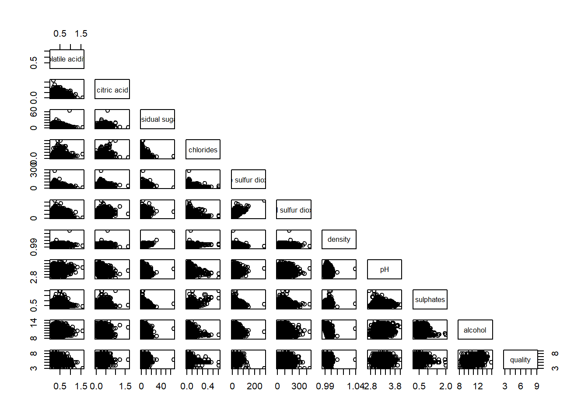
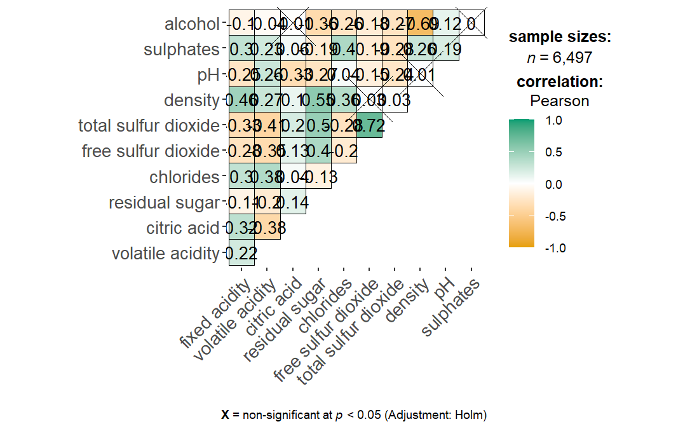
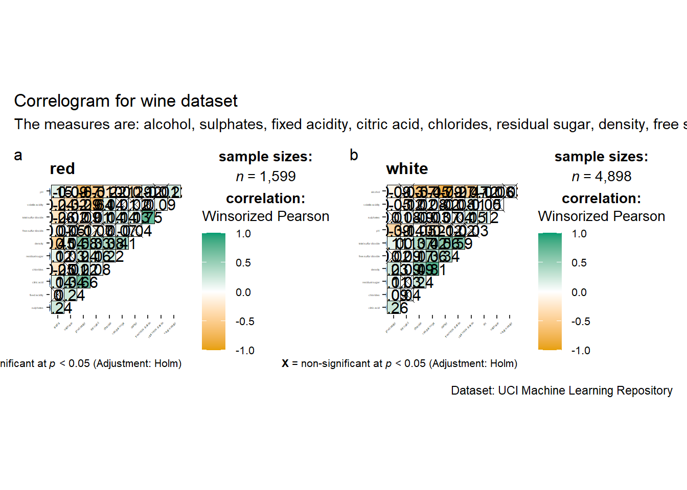
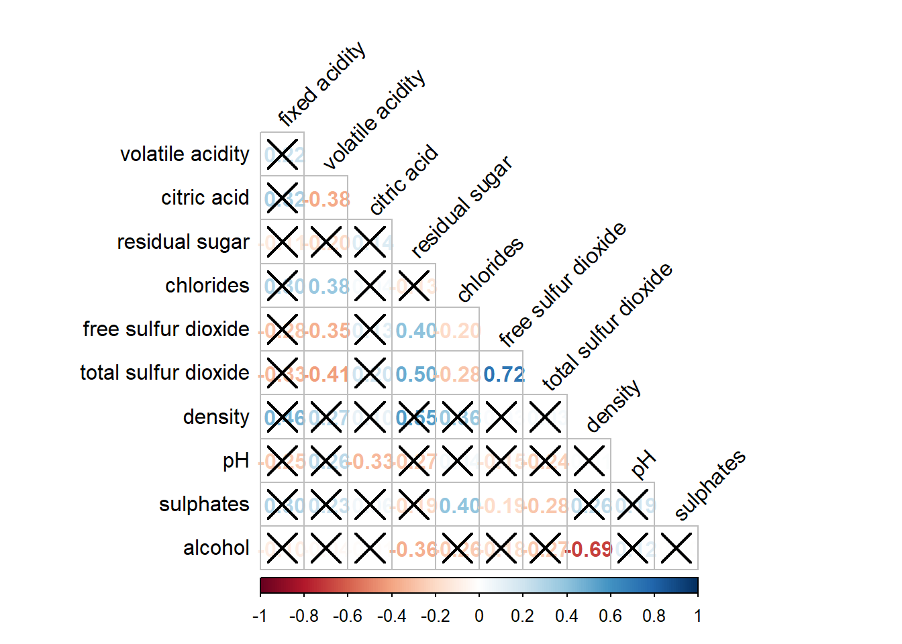
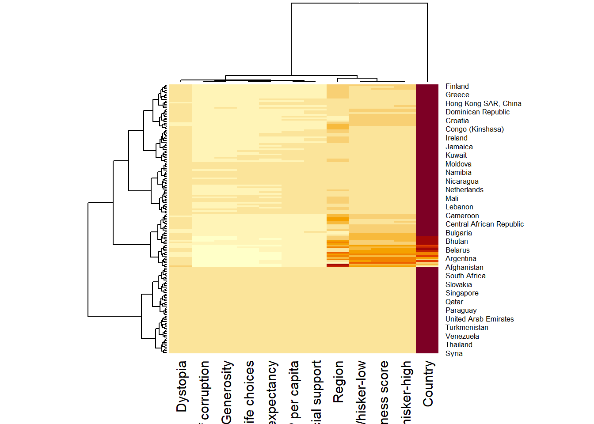
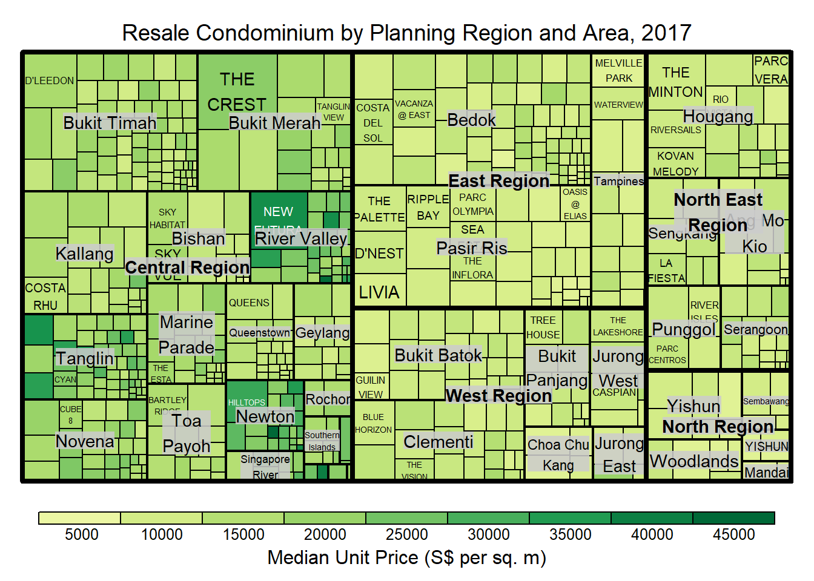
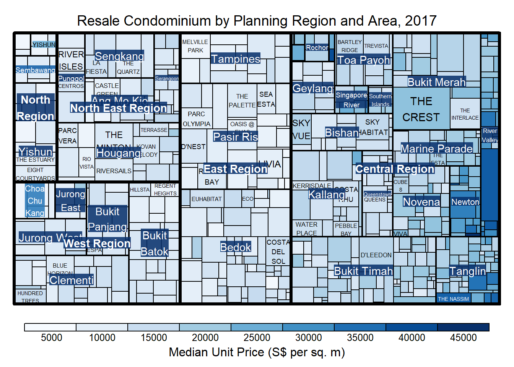
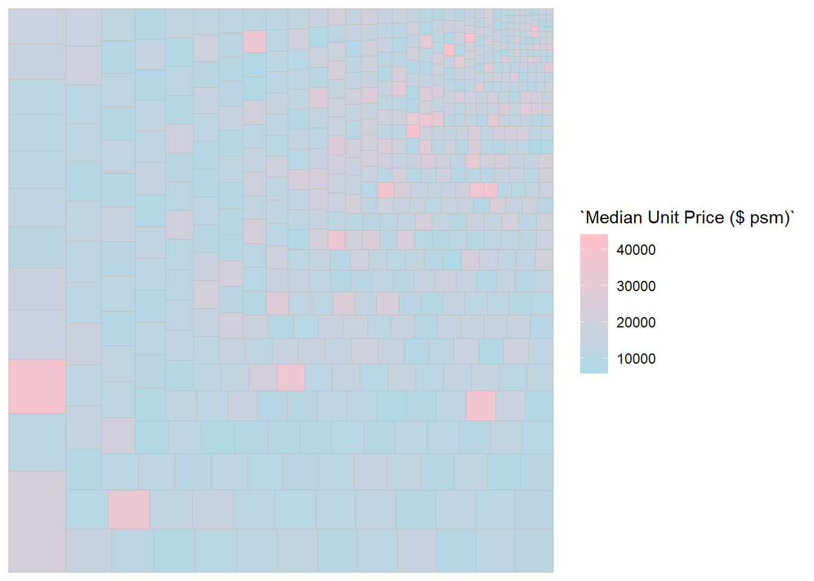
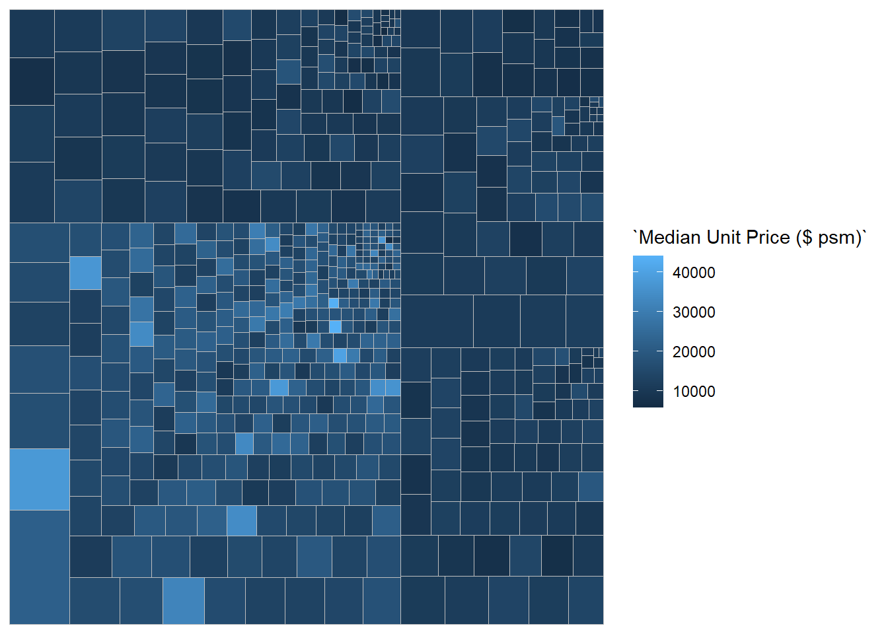

pacman::p_load(plotly, ggtern, tidyverse)package 'plotly' successfully unpacked and MD5 sums checked
The downloaded binary packages are in
C:\Users\carol\AppData\Local\Temp\RtmpSSw0Gq\downloaded_packagesTernary plots are a way of displaying the distribution and variability of three-part compositional data. (For example, the proportion of aged, economy active and young population or sand, silt, and clay in soil.) It’s display is a triangle with sides scaled from 0 to 1. Each side represents one of the three components. A point is plotted so that a line drawn perpendicular from the point to each leg of the triangle intersect at the component values of the point.
ggtern, a ggplot extension specially designed to plot ternary diagrams. The package will be used to plot static ternary plots.
Plotly R, an R package for creating interactive web-based graphs via plotly’s JavaScript graphing library, plotly.js . The plotly R libary contains the ggplotly function, which will convert ggplot2 figures into a Plotly object.
We will also need to ensure that selected tidyverse family packages namely: readr, dplyr and tidyr are also installed and loaded.
pacman::p_load(plotly, ggtern, tidyverse)package 'plotly' successfully unpacked and MD5 sums checked
The downloaded binary packages are in
C:\Users\carol\AppData\Local\Temp\RtmpSSw0Gq\downloaded_packagesTo important respopagsex2000to2018_tidy.csv into R, read_csv() function of readr package will be used. Next, use the mutate() function of dplyr package to derive three new measures, namely: young, active, and old.
#Reading the data into R environment
pop_data <- read_csv("data/respopagsex2000to2018_tidy.csv")
#Deriving the young, economy active and old measures
agpop_mutated <- pop_data %>%
mutate(`Year` = as.character(Year))%>%
spread(AG, Population) %>%
mutate(YOUNG = rowSums(.[4:8]))%>%
mutate(ACTIVE = rowSums(.[9:16])) %>%
mutate(OLD = rowSums(.[17:21])) %>%
mutate(TOTAL = rowSums(.[22:24])) %>%
filter(Year == 2018)%>%
filter(TOTAL > 0)# reusable function for creating annotation object
label <- function(txt) {
list(
text = txt,
x = 0.1, y = 1,
ax = 0, ay = 0,
xref = "paper", yref = "paper",
align = "center",
font = list(family = "serif", size = 15, color = "white"),
bgcolor = "#b3b3b3", bordercolor = "black", borderwidth = 2
)
}
# reusable function for axis formatting
axis <- function(txt) {
list(
title = txt, tickformat = ".0%", tickfont = list(size = 10)
)
}
ternaryAxes <- list(
aaxis = axis("Young"),
baxis = axis("Active"),
caxis = axis("Old")
)
# Initiating a plotly visualization
plot_ly(
agpop_mutated,
a = ~YOUNG,
b = ~ACTIVE,
c = ~OLD,
color = I("black"),
type = "scatterternary"
) %>%
layout(
annotations = label("Ternary Markers"),
ternary = ternaryAxes
)Correlation coefficient is a popular statistic that use to measure the type and strength of the relationship between two variables. The values of a correlation coefficient ranges between -1.0 and 1.0. A correlation coefficient of 1 shows a perfect linear relationship between the two variables, while a -1.0 shows a perfect inverse relationship between the two variables. A correlation coefficient of 0.0 shows no linear relationship between the two variables.
When multivariate data are used, the correlation coefficeints of the pair comparisons are displayed in a table form known as correlation matrix or scatterplot matrix.
There are three broad reasons for computing a correlation matrix.
To reveal the relationship between high-dimensional variables pair-wisely.
To input into other analyses. For example, people commonly use correlation matrices as inputs for exploratory factor analysis, confirmatory factor analysis, structural equation models, and linear regression when excluding missing values pairwise.
As a diagnostic when checking other analyses. For example, with linear regression a high amount of correlations suggests that the linear regression’s estimates will be unreliable.
When the data is large, both in terms of the number of observations and the number of variables, Corrgram tend to be used to visually explore and analyse the structure and the patterns of relations among variables. It is designed based on two main schemes:
Rendering the value of a correlation to depict its sign and magnitude, and
Reordering the variables in a correlation matrix so that “similar” variables are positioned adjacently, facilitating perception.
use the code chunk below to install and launch corrplot, ggpubr, plotly and tidyverse in RStudio.
pacman::p_load(corrplot, ggstatsplot, tidyverse)Import the data into R by using read_csv() of readr package.
wine <- read_csv("data/wine_quality.csv")There are more than one way to build scatterplot matrix with R. In this section, you will learn how to create a scatterplot matrix by using the pairs function of R Graphics. ### 2.4.1 Building a basic correlation matrix The numbers in the square bracket indicates the column number.
pairs(wine[,1:11])
pairs function of R Graphics provided many customisation arguments. For example, it is a common practice to show either the upper half or lower half of the correlation matrix instead of both. This is because a correlation matrix is symmetric.
pairs(wine[,2:12], upper.panel = NULL)
To show the correlation coefficient of each pair of variables instead of a scatter plot, panel.cor function will be used. This will also show higher correlations in a larger font.
panel.cor <- function(x, y, digits=2, prefix="", cex.cor, ...) {
usr <- par("usr")
on.exit(par(usr))
par(usr = c(0, 1, 0, 1))
r <- abs(cor(x, y, use="complete.obs"))
txt <- format(c(r, 0.123456789), digits=digits)[1]
txt <- paste(prefix, txt, sep="")
if(missing(cex.cor)) cex.cor <- 0.8/strwidth(txt)
text(0.5, 0.5, txt, cex = cex.cor * (1 + r) / 2)
}
pairs(wine[,2:12],
upper.panel = panel.cor)
ggcormat()ne of the major limitation of the correlation matrix is that the scatter plots appear very cluttered when the number of observations is relatively large (i.e. more than 500 observations). To over come this problem, Corrgram data visualisation technique suggested by D. J. Murdoch and E. D. Chow (1996) and Friendly, M (2002) and will be used.
On of the advantage of using ggcorrmat() over many other methods to visualise a correlation matrix is it’s ability to provide a comprehensive and yet professional statistical report as shown in the figure below.
ggstatsplot::ggcorrmat(
data = wine,
cor.vars = 1:11)
Since ggstasplot is an extension of ggplot2, it also supports faceting. However the feature is not available in ggcorrmat() but in the grouped_ggcorrmat() of ggstatsplot.
grouped_ggcorrmat(
data = wine,
cor.vars = 1:11,
grouping.var = type,
type = "robust",
p.adjust.method = "holm",
plotgrid.args = list(ncol = 2),
ggcorrplot.args = list(outline.color = "black",
hc.order = TRUE,
tl.cex = 2),
annotation.args = list(
tag_levels = "a",
title = "Correlogram for wine dataset",
subtitle = "The measures are: alcohol, sulphates, fixed acidity, citric acid, chlorides, residual sugar, density, free sulfur dioxide and volatile acidity",
caption = "Dataset: UCI Machine Learning Repository"
)
)
wine.cor <- cor(wine[, 1:11])
corrplot(wine.cor)
With corrplot package, it is possible to design corrgram with mixed visual matrix of one half and numerical matrix on the other half. In order to create a coorgram with mixed layout, the corrplot.mixed(), a wrapped function for mixed visualisation style will be used.
Figure below shows a mixed layout corrgram plotted using wine quality data.
corrplot.mixed(wine.cor,
lower = "ellipse",
upper = "number",
tl.pos = "lt",
diag = "l",
tl.col = "black")
With corrplot package, we can use the cor.mtest() to compute the p-values and confidence interval for each pair of variables.
wine.sig = cor.mtest(wine.cor, conf.level= .95)
corrplot(wine.cor,
method = "number",
type = "lower",
diag = FALSE,
tl.col = "black",
tl.srt = 45,
p.mat = wine.sig$p,
sig.level = .05)
If using hclust, corrplot() can draw rectangles around the corrgram based on the results of hierarchical clustering.
corrplot(wine.cor,
method = "ellipse",
tl.pos = "lt",
tl.col = "black",
order="hclust",
hclust.method = "ward.D",
addrect = 3)
Heatmaps visualise data through variations in colouring. When applied to a tabular format, heatmaps are useful for cross-examining multivariate data, through placing variables in the columns and observation (or records) in rowa and colouring the cells within the table. Heatmaps are good for showing variance across multiple variables, revealing any patterns, displaying whether any variables are similar to each other, and for detecting if any correlations exist in-between them. ## 3.1 Installing and Launching R Packages Use the code chunk below to install and launch seriation, heatmaply, dendextend and tidyverse in RStudio.
pacman::p_load(seriation, dendextend, heatmaply, tidyverse)package 'heatmaply' successfully unpacked and MD5 sums checked
The downloaded binary packages are in
C:\Users\carol\AppData\Local\Temp\RtmpSSw0Gq\downloaded_packagesIn the code chunk below, read_csv() of readr is used to import WHData-2018.csv into R and parsed it into tibble R data frame format.Change the rows by country name instead of row number by using the code chunk below
wh <- read_csv("data/WHData-2018.csv")
row.names(wh) <- wh$Country
wh1 <- dplyr::select(wh, c(3, 7:12))
wh_matrix <- data.matrix(wh)To plot a cluster heatmap, we just have to use the default as shown in the code chunk below.
wh_heatmap <- heatmap(wh_matrix)
Here, red cells denotes small values, and red small ones. This heatmap is not really informative. Indeed, the Happiness Score variable have relatively higher values, what makes that the other variables with small values all look the same. Thus, we need to normalize this matrix. This is done using the scale argument. It can be applied to rows or to columns following your needs.
The code chunk below normalises the matrix column-wise.
wh_heatmap <- heatmap(wh_matrix,
scale="column",
cexRow = 0.6,
cexCol = 0.8,
margins = c(10, 4))
Notice that the values are scaled now. Also note that margins argument is used to ensure that the entire x-axis labels are displayed completely and, cexRow and cexCol arguments are used to define the font size used for y-axis and x-axis labels respectively.
heatmaply is an R package for building interactive cluster heatmap that can be shared online as a stand-alone HTML file. It is designed and maintained by Tal Galili. ### 3.4.1 Working with heatmaply In this section, you will gain hands-on experience on using heatmaply to design an interactive cluster heatmap. We will still use the wh_matrix as the input data.
heatmaply(mtcars)One of the problems with hierarchical clustering is that it doesn’t actually place the rows in a definite order, it merely constrains the space of possible orderings. Take three items A, B and C. If you ignore reflections, there are three possible orderings: ABC, ACB, BAC. If clustering them gives you ((A+B)+C) as a tree, you know that C can’t end up between A and B, but it doesn’t tell you which way to flip the A+B cluster. It doesn’t tell you if the ABC ordering will lead to a clearer-looking heatmap than the BAC ordering.
heatmaply uses the seriation package to find an optimal ordering of rows and columns. Optimal means to optimize the Hamiltonian path length that is restricted by the dendrogram structure. This, in other words, means to rotate the branches so that the sum of distances between each adjacent leaf (label) will be minimized. This is related to a restricted version of the travelling salesman problem.
Here we meet our first seriation algorithm: Optimal Leaf Ordering (OLO). This algorithm starts with the output of an agglomerative clustering algorithm and produces a unique ordering, one that flips the various branches of the dendrogram around so as to minimize the sum of dissimilarities between adjacent leaves. Here is the result of applying Optimal Leaf Ordering to the same clustering result as the heatmap above.
heatmaply(normalize(wh_matrix[, -c(1, 2, 4, 5)]),
seriate = "OLO")Error in heatmaply(normalize(wh_matrix[, -c(1, 2, 4, 5)]), seriate = "OLO"): could not find function "heatmaply"The option “mean” gives the output we would get by default from heatmap functions in other packages such as gplots::heatmap.2.
heatmaply(normalize(wh_matrix[, -c(1, 2, 4, 5)]),
seriate = "mean")Error in heatmaply(normalize(wh_matrix[, -c(1, 2, 4, 5)]), seriate = "mean"): could not find function "heatmaply"The default colour palette uses by heatmaply is viridis. heatmaply users, however, can use other colour palettes in order to improve the aestheticness and visual friendliness of the heatmap.
In the code chunk below, the Blues colour palette of rColorBrewer is used
heatmaply(normalize(wh_matrix[, -c(1, 2, 4, 5)]),
seriate = "none",
colors = Blues)Error in heatmaply(normalize(wh_matrix[, -c(1, 2, 4, 5)]), seriate = "none", : could not find function "heatmaply"Beside providing a wide collection of arguments for meeting the statistical analysis needs, heatmaply also provides many plotting features to ensure cartographic quality heatmap can be produced.
In the code chunk below the following arguments are used:
k_row is used to produce 5 groups.
margins is used to change the top margin to 60 and row margin to 200.
fontsizw_row and fontsize_col are used to change the font size for row and column labels to 4.
main is used to write the main title of the plot.
xlab and ylab are used to write the x-axis and y-axis labels respectively.
heatmaply(normalize(wh_matrix[, -c(1, 2, 4, 5)]),
Colv=NA,
seriate = "none",
colors = Blues,
k_row = 5,
margins = c(NA,200,60,NA),
fontsize_row = 4,
fontsize_col = 5,
main="World Happiness Score and Variables by Country, 2018 \nDataTransformation using Normalise Method",
xlab = "World Happiness Indicators",
ylab = "World Countries"
)Error in heatmaply(normalize(wh_matrix[, -c(1, 2, 4, 5)]), Colv = NA, : could not find function "heatmaply"Parallel coordinates plot is a data visualisation specially designed for visualising and analysing multivariate, numerical data. It is ideal for comparing multiple variables together and seeing the relationships between them. plotting statistic parallel coordinates plots by using ggparcoord() of GGally package, plotting interactive parallel coordinates plots by using parcoords package, and plotting interactive parallel coordinates plots by using parallelPlot package.
pacman::p_load(GGally, parallelPlot, tidyverse)package 'parallelPlot' successfully unpacked and MD5 sums checked
The downloaded binary packages are in
C:\Users\carol\AppData\Local\Temp\RtmpSSw0Gq\downloaded_packageswh <- read_csv("data/WHData-2018.csv")plot static parallel coordinates plot by using ggparcoord() of GGally package. Before getting started, it is a good practice to read the function description in detail.
Code chunk below shows a typical syntax used to plot a basic static parallel coordinates plot by using ggparcoord().
ggparcoord(data = wh,
columns = c(7:12))
The basic parallel coordinates failed to reveal any meaning understanding of the World Happiness measures. In this section, you will learn how to makeover the plot by using a collection of arguments provided by ggparcoord().
ggparcoord(data = wh,
columns = c(7:12),
groupColumn = 2,
scale = "uniminmax",
alphaLines = 0.2,
boxplot = TRUE,
title = "Parallel Coordinates Plot of World Happines Variables")
Since ggparcoord() is developed by extending ggplot2 package, we can combination use some of the ggplot2 function when plotting a parallel coordinates plot.
In the code chunk below, facet_wrap() of ggplot2 is used to plot 10 small multiple parallel coordinates plots. Each plot represent one geographical region such as East Asia.
ggparcoord(data = wh,
columns = c(7:12),
groupColumn = 2,
scale = "uniminmax",
alphaLines = 0.2,
boxplot = TRUE,
title = "Multiple Parallel Coordinates Plots of World Happines Variables by Region") +
facet_wrap(~ Region) +
theme(axis.text.x = element_text(angle = 30, hjust=1))
parallelPlot is an R package specially designed to plot a parallel coordinates plot by using ‘htmlwidgets’ package and d3.js. In this section, you will learn how to use functions provided in parallelPlot package to build interactive parallel coordinates plot.
histoVisibility <- rep(TRUE, ncol(wh))
parallelPlot(wh,
rotateTitle = TRUE,
histoVisibility = histoVisibility)Error in parallelPlot(wh, rotateTitle = TRUE, histoVisibility = histoVisibility): could not find function "parallelPlot"In this section, we will manipulate transaction data into a treemap strcuture by using selected functions provided in dplyr package. Then, we will learn how to plot static treemap by using treemap package. In the third section, we will learn how to design interactive treemap by using d3treeR package.
Check if treemap and tidyverse pacakges have been installed
pacman::p_load(treemap, treemapify, tidyverse) The data.frame realis2018 is in trasaction record form, which is highly disaggregated and not appropriate to be used to plot a treemap. In this section, we will perform the following steps to manipulate and prepare a data.frtame that is appropriate for treemap visualisation:
group transaction records by Project Name, Planning Region, Planning Area, Property Type and Type of Sale, and
compute Total Unit Sold, Total Area, Median Unit Price and Median Transacted Price by applying appropriate summary statistics on No. of Units, Area (sqm), Unit Price ($ psm) and Transacted Price ($) respectively.
Two key verbs of dplyr package, namely: group_by() and summarize() will be used to perform these steps.
group_by() breaks down a data.frame into specified groups of rows. When you then apply the verbs above on the resulting object they’ll be automatically applied “by group”.
realis2018 <- read_csv("data/realis2018.csv")
realis2018_grouped <- group_by(realis2018, `Project Name`,
`Planning Region`, `Planning Area`,
`Property Type`, `Type of Sale`)
realis2018_summarised <- summarise(realis2018_grouped,
`Total Unit Sold` = sum(`No. of Units`, na.rm = TRUE),
`Total Area` = sum(`Area (sqm)`, na.rm = TRUE),
`Median Unit Price ($ psm)` = median(`Unit Price ($ psm)`, na.rm = TRUE),
`Median Transacted Price` = median(`Transacted Price ($)`, na.rm = TRUE))
realis2018_summarised <- realis2018 %>%
group_by(`Project Name`,`Planning Region`,
`Planning Area`, `Property Type`,
`Type of Sale`) %>%
summarise(`Total Unit Sold` = sum(`No. of Units`, na.rm = TRUE),
`Total Area` = sum(`Area (sqm)`, na.rm = TRUE),
`Median Unit Price ($ psm)` = median(`Unit Price ($ psm)`, na.rm = TRUE),
`Median Transacted Price` = median(`Transacted Price ($)`, na.rm = TRUE))treemap package is a R package specially designed to offer great flexibility in drawing treemaps. The core function, namely: treemap() offers at least 43 arguments. In this section, we will only explore the major arguments for designing elegent and yet truthful treemaps.
The code chunk below designed a treemap by using three core arguments of treemap(), namely: index, vSize and vColor.
realis2018_selected <- realis2018_summarised %>%
filter(`Property Type` == "Condominium", `Type of Sale` == "Resale")
treemap(realis2018_selected,
index=c("Planning Region", "Planning Area", "Project Name"),
vSize="Total Unit Sold",
vColor="Median Unit Price ($ psm)",
title="Resale Condominium by Planning Region and Area, 2017",
title.legend = "Median Unit Price (S$ per sq. m)"
)
Things to learn from the three arguments used:
index
The index vector must consist of at least two column names or else no hierarchy treemap will be plotted.
If multiple column names are provided, such as the code chunk above, the first name is the highest aggregation level, the second name the second highest aggregation level, and so on.
vSize
n the code chunk below, type argument is define as value.
treemap(realis2018_selected,
index=c("Planning Region", "Planning Area", "Project Name"),
vSize="Total Unit Sold",
vColor="Median Unit Price ($ psm)",
type = "value",
title="Resale Condominium by Planning Region and Area, 2017",
title.legend = "Median Unit Price (S$ per sq. m)"
)
The code chunk below plots a squarified treemap by changing the algorithm argument. When “pivotSize” algorithm is used, sortID argument can be used to dertemine the order in which the rectangles are placed from top left to bottom right.
treemap(realis2018_selected,
index=c("Planning Region", "Planning Area", "Project Name"),
vSize="Total Unit Sold",
vColor="Median Unit Price ($ psm)",
type="manual",
palette="Blues",
algorithm = "pivotSize",
sortID = "Median Transacted Price",
title="Resale Condominium by Planning Region and Area, 2017",
title.legend = "Median Unit Price (S$ per sq. m)"
)
treemapify is a R package specially developed to draw treemaps in ggplot2. In this section, you will learn how to designing treemps closely resemble treemaps designing in previous section by using treemapify. Before you getting started, you should read Introduction to “treemapify” its user guide.
ggplot(data=realis2018_selected,
aes(area = `Total Unit Sold`,
fill = `Median Unit Price ($ psm)`),
layout = "scol",
start = "bottomleft") +
geom_treemap() +
scale_fill_gradient(low = "light blue", high = "pink")
Group by Planning Region
ggplot(data=realis2018_selected,
aes(area = `Total Unit Sold`,
fill = `Median Unit Price ($ psm)`,
subgroup = `Planning Region`),
start = "topleft") +
geom_treemap()
install.packages("devtools")package 'devtools' successfully unpacked and MD5 sums checked
The downloaded binary packages are in
C:\Users\carol\AppData\Local\Temp\RtmpSSw0Gq\downloaded_packageslibrary(devtools)Error: package or namespace load failed for 'devtools' in loadNamespace(i, c(lib.loc, .libPaths()), versionCheck = vI[[i]]):
namespace 'htmltools' 0.5.6 is already loaded, but >= 0.5.7 is requiredinstall_github("timelyportfolio/d3treeR")Error in install_github("timelyportfolio/d3treeR"): could not find function "install_github"library(d3treeR)The codes below perform two processes.
treemap() is used to build a treemap by using selected variables in condominium data.frame. The treemap created is save as object called tm.
Then d3tree() is used to build an interactive treemap.
tm <- treemap(realis2018_summarised,
index=c("Planning Region", "Planning Area"),
vSize="Total Unit Sold",
vColor="Median Unit Price ($ psm)",
type="value",
title="Private Residential Property Sold, 2017",
title.legend = "Median Unit Price (S$ per sq. m)"
)
d3tree(tm,rootname = "Singapore" )Error in loadNamespace(i, c(lib.loc, .libPaths()), versionCheck = vI[[i]]): namespace 'htmltools' 0.5.6 is already loaded, but >= 0.5.7 is required